“分数的初步认识”教学设计 [1]
教学内容：九年义务教育五年制小学数学第五册119～120页的内容及相应的习题
教学目的：1.使学生初步认识几分之一。
2.会读、写简单的分数。
3.知道分数各部分的名称。
4.通过分数的引进，向学生渗透数来源于生活与实践的思想。
教学重点：感知平均分。
教学难点：初步认识几分之一的含义。
教具：投影仪，幻灯片，长方形、正方形、圆形纸各一张，米尺一把。
学具：同样大小的正方形纸3张，长方形、圆形纸各1张。
教学过程：
一、师生谈话、交流，引入新课
1.教师了解班级人数、全班男生人数、女生人数、某一组男生人数、女生人数、全校人数及某同学的家庭人数。表扬学生能关心集体，板书学生所说的人数（建立师生情感，为学习几分之一打下基础）。
2.教师提问，学生用手指表示
（1）有6支铅笔，平均分给2个小朋友，每人分几支？
（2）有4个苹果，平均分给2个小朋友，每人分几个？
（3）有4个梨，平均分给4个小朋友，每人分几个？
（4）有1个饼，平均分给2个小朋友，每人分几个？
这时学生无法用手指表示，产生认知冲突，引入新课。
板书：分数的初步认识。
二、进行新课
1.例1（投影）：把一个饼平均分成两块，每块是它的二分之一，写作
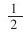
。教师拿一张圆形纸再演示，强调必须平均分，这样的一份就是这个圆的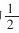
（教师演示，一方面加深学生对几分之一的认识，另一方面为学生动手操作做示范）。2.例2：让学生拿出长方形纸对折，并说出把这张纸平均分成了（）份，每份是它的（）分之一，写作
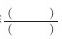
，如果再对折，这时这张纸平均分成了（）份，每一份是它的（）分之一，写作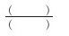
。3.例3（投影）：把一个圆平均分成（）份，每份是它的（）分之一，写作
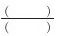
；把一张长方形纸平均分成3份，指出它的三分之一，并涂上颜色。4.例4：让学生自己看书，填空（教师在黑板上画1米长的线段，并平均分成10份）。
5.例5：让学生观察黑板上1米长的线段，说出把它平均分成了（）份，每份是它的几分之几？
6.教师概括：像
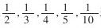
这样的数都是分数。7.让学生再说出几个分数，并将其中的一个分数板书出来。
8.认识分数各部分名称
1……分子（表示取的份数）
——……分数线（表示平均分）
8……分母（表示平均分的份数）
让学生自己举例，说出每个分数各部分名称。
三、练习
1.用三张同样大小的正方形纸，分别叠出它的
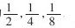
。2.完成120页，做一做中的第2题，并说出错的原因。
3.完成122页练习二十八中的1～5题，教师参与学生的活动，边指导，边评价，并反馈结果。
4.口答
（1）有一个饼，平均分给2个小朋友，每人分几个？（12个，解决引入新课时的疑惑问题）
（2）让一名学生说他占全班人数的
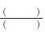
，让一名女生说，她占班级女生人数的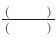
，让某一小组的一名男生说他占他们小组人数的
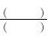
；再让这个小组的一位女生说一说，她占全组人数的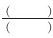
；占小组女生人数的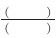
；让一名学生说，他占全校人数的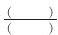
；让一名学生说，他占家庭人数的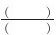
；也可以让学生自由说。四、课堂小结
这节课我们学习了什么？（分数的初步认识），你有什么收获？（认识了几分之一，会读、写分数，知道分数各部分的名称……），还有什么发现或问题？
五、课外作业
1.写出5个分子是1分数，读给父母或小组同学听。
2.猜谜语：“百里挑一”是几分之几？
3.选做题：用分数表示图中不同颜色的部分。
红的占
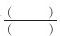
黄的占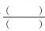
蓝的占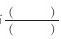
白的占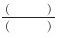
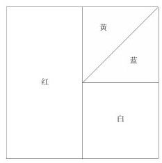